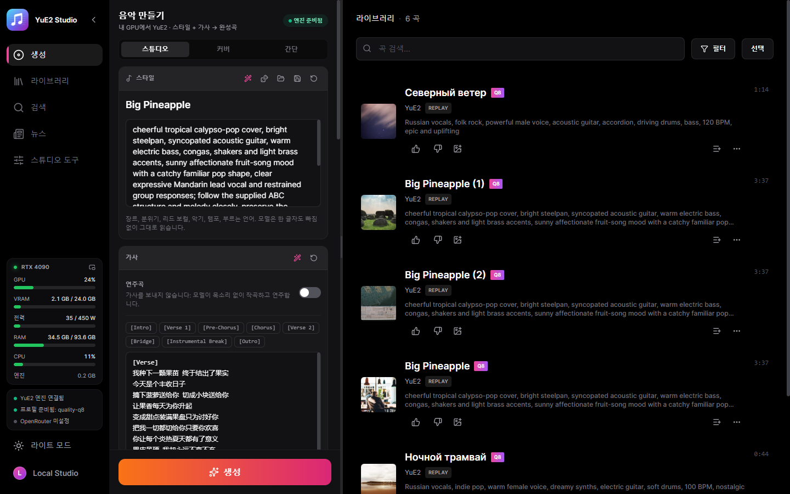
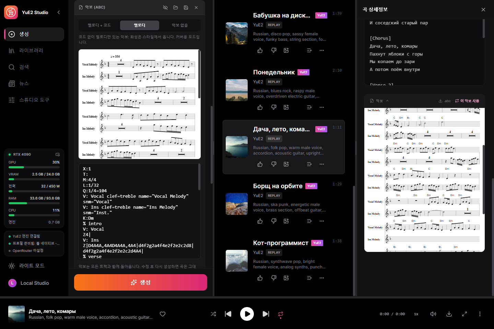
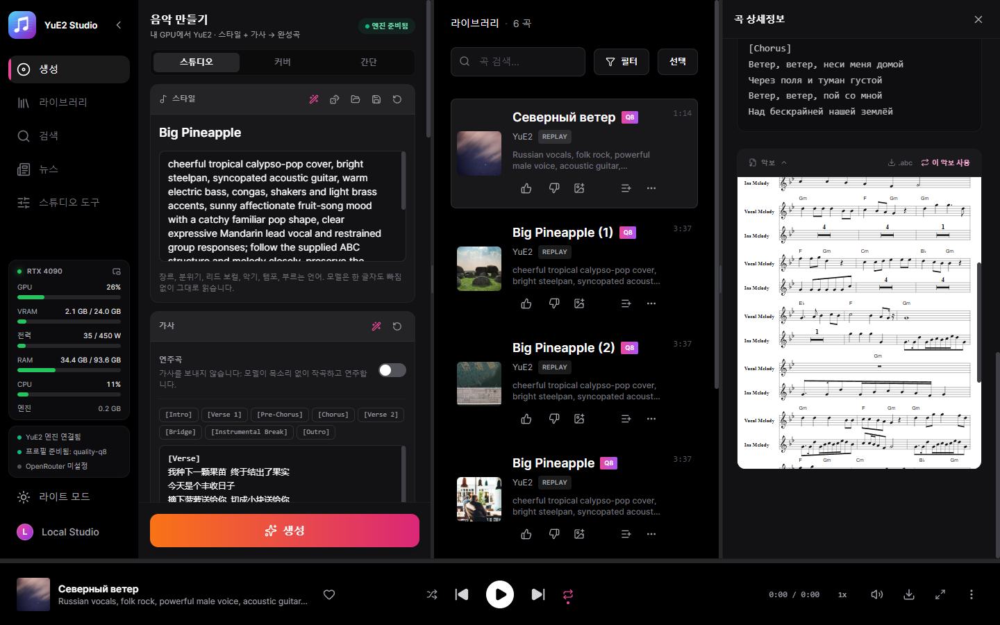
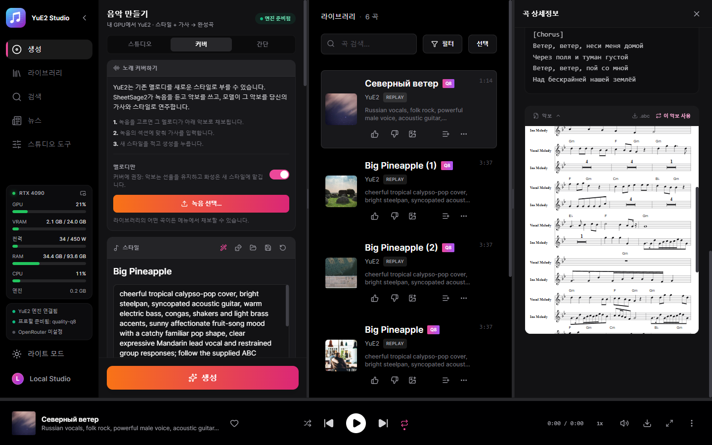
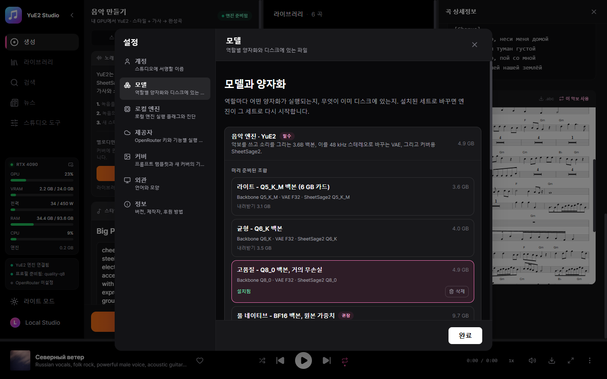

편집 가능한 악보가 있는 완성곡을, 내 GPU에서
YuE2를 위한 데스크톱 스튜디오입니다. YuE2는 노래하기 전에 악보부터 쓰는 오픈 노래 모델입니다. 스타일을 설명하고 가사를 쓰면, 모델이 코드가 붙은 멜로디를 악보로 작곡한 뒤 보컬이 있는 완성곡으로 연주합니다. 악보를 읽고 고쳐서 같은 곡을 다른 소리로 다시 렌더링할 수 있습니다. 실행 파일 하나 — Python도 런처도 필요 없습니다.
Windows 10/11 x64와 VRAM 6 GB 이상의 그래픽카드: NVIDIA(GTX 16 / RTX 20 이상)는 CUDA로 동작하며 AMD와 Intel의 Vulkan은 실험적입니다. 모델은 스튜디오 안에서 원할 때 내려받습니다.

기능
직접 클라우드 키를 연결하지 않는 한, 아래 모든 것은 내 컴퓨터에서 실행됩니다.
완성곡
스타일과 가사로 최대 6분. RTX 4090과 Q8_0 세트에서 3:38 길이의 곡이 약 46초 만에 렌더링됩니다.
편집 가능한 악보
곡은 ABC 표기로 돌아와 악보로 그려집니다. 고친 뒤 다시 만들면 곡은 그대로, 연주가 바뀝니다.
악보 먼저
노래하기 전에 몇 초 만에 악보만 씁니다. 읽고 고친 뒤 만드세요. yue2.cpp의 yue-plan에 해당합니다.
커버
SheetSage2가 어떤 녹음이든 멜로디를 악보로 받아 적고, YuE2가 내 가사와 스타일로 부릅니다.
정확한 재현
모든 트랙은 요청과 오디오 코드를 저장합니다. 비트 단위로 다시 렌더링하거나 스텝, 사운드 시드, 변주를 바꿔 만들 수 있습니다.
예제 110개
yue2.cpp에 포함된 스타일·가사·악보 세트(커버 포함)를 한 번에 불러옵니다.
작사 도우미
로컬 Gemma 또는 OpenRouter가 아이디어로 스타일과 가사를 쓰고 요청에 따라 악보를 편집합니다.
단어 단위 가라오케
모든 단어에 타임스탬프가 있는 확장 LRC, Parakeet 또는 Whisper로 정렬.
GPU 스템 분리
드럼, 베이스, 기타 소리, 보컬, 기타, 피아노를 HT-Demucs로 분리.
샘플
새로 설치한 스튜디오와 권장 세트로 만들었고, 스튜디오가 저장한 그대로입니다. 모두 러시아어.
English, funk disco, groovy male voice, slap bass, wah guitar, brass stabs, four on the floor drums, playful, 118 BPMEnglish, country, warm male baritone, acoustic guitar, pedal steel, fiddle, brushed drums, easygoing, 96 BPMSpanish, latin pop, bright female voice, nylon guitar, congas, piano montuno, bass, sunny danceable, 102 BPMMandarin, city pop, smooth male voice, electric piano, funky bass, clean guitar, drum machine, warm night mood, 108 BPMJapanese, j-rock, energetic female voice, distorted electric guitars, driving bass, fast drums, anime opening, 168 BPMRussian, folk pop, warm male voice, accordion, acoustic guitar, upright bass, 104 BPMRussian, vintage jazz swing, sultry female crooner, upright bass, brushed drums, muted trumpet, 104 BPMRussian, blues rock, raspy male voice, overdriven electric guitar, hammond organ, shuffle drums, 96 BPMRussian, disco pop, sassy female voice, funky bass, string section, four on the floor drums, 120 BPMRussian, ska punk, energetic male voice, brass section, offbeat guitar, fast drums, 150 BPMRussian, synthwave pop, clear expressive female voice, analog synths, punchy drum machine, 112 BPMRussian, upbeat pop-punk, energetic male vocals, driving distorted electric guitars, fast bass lines, crashing drums, rebellious and fun, 185 BPM스크린샷
이 언어로 본 스튜디오 그대로.




모델
실행 가능한 세트는 YuE2-3B 백본과 VAE입니다. SheetSage2는 선택 사항이며 커버에만 필요합니다.
| 내 GPU | 세트 | 다운로드 |
|---|---|---|
| 12 GB+ | 풀 네이티브 — BF16, 원본 가중치 | 9.7 GB |
| 8 GB+ | 고품질 — Q8_0, 거의 무손실 | 4.9 GB |
| 7 GB+ | 균형 — Q6_K | 4.0 GB |
| 5.5 GB+ | 라이트 — Q5_K_M | 3.6 GB |
크기는 SheetSage2를 포함합니다. 스튜디오가 그래픽카드에서 돌아가는 세트를 미리 골라 주지만, 다운로드는 언제나 내 결정입니다. 모든 파일은 고정된 Hugging Face 리비전에 대해 SHA-256으로 검증되며, 중단된 다운로드는 이어받습니다.
시작하기
- 설치 — 설치 프로그램을 실행하거나 포터블 압축 파일을 아무 곳에나 풉니다.
- 세트 선택 — 첫 화면이 그래픽카드에 맞는 세트를 골라 주고, 없는 파일만 내려받습니다.
- 쓰기 — 스타일과 가사를 쓰거나 예제를 불러옵니다. 연주곡은 스위치 하나.
- 만들기 — 엔진이 저절로 시작되고, 곡은 악보와 함께 라이브러리에 들어갑니다.
무엇이 어디서 실행되나
기본은 모두 로컬. 클라우드 키는 선택한 기능을 위해 직접 추가합니다.
| 구성 요소 | 실행 위치 | 크기 |
|---|---|---|
| YuE2 엔진 (yue2.cpp) | 그래픽카드: CUDA, Vulkan 또는 프로세서 | 포함 |
| YuE2 모델 세트 | 내 GPU | 3.6–9.7 GB |
| NVIDIA cuBLAS | NVIDIA 카드 전용 | 391 MB, 한 번 |
| 가라오케 타이밍 — Parakeet 또는 Whisper | 내 컴퓨터 | 선택 |
| 스템 분리 — HT-Demucs | GPU 또는 CPU | 선택 |
| 작사 도우미 | 로컬 Gemma 또는 OpenRouter | 선택 |
구조
서비스는 데스크톱 실행 파일에 컴파일되어 C++ 엔진을 관리합니다. 완성된 곡은 서비스가 직접 가져오므로 새로 고침하거나 창을 닫아도 결과가 사라지지 않습니다.
React UI ─┐
├─ YuE2-Studio.exe (Tauri window + Rust/Axum service)
Rust axum ┘ │
└─ yue2.cpp `yue-server` (C++/CUDA, GGUF)
개인정보
내 음악은 내 것이고, 내 디스크에 남습니다.
계정 없음
가입할 것이 없습니다.
원격 측정 없음
스튜디오는 무엇을 만들었는지 보고하지 않습니다.
클라우드는 선택
키를 추가하기 전에는 아무것도 컴퓨터 밖으로 나가지 않으며, 추가한 뒤에도 그 기능에만 쓰입니다.
만든 사람
Nerual Dreming — 아티스트, ArtGeneration.me와 Neuro-Cartel 커뮤니티 설립자, 이 스튜디오의 뿌리인 ACE-Step Studio와 MiniMax Music3 Studio의 제작자.